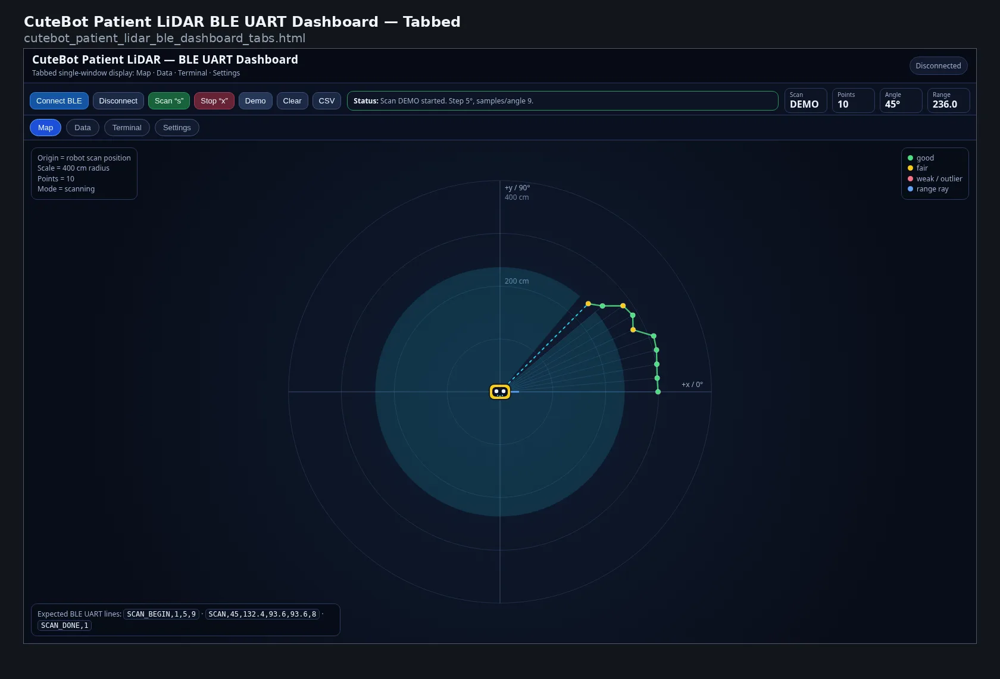

01 · Experiments & Teaching
The Singing Rule
Hands-on bench inquiries where real measurements earn the equation.
Calorimeter · Water Clock · TeaTime · CORE 10
How much? Enough? Randall Young’s working archive—measure what happened, then decide whether it was enough for the purpose.
01 · Experiments & Teaching
Hands-on bench inquiries where real measurements earn the equation.
Calorimeter · Water Clock · TeaTime · CORE 10

02 · Instruments & Robotics
Low-cost wireless builds, browser dashboards, and mapping robots.

03 · Movement & Fitness
Marked walking trials, step validation, and fair physical workload testing.

04 · Research & Scholarship
PDP-8 to peroxide-managing enzymes: three papers and an open lab.
Experience before equation: ordinary phenomena measured first.


Optics · Calibration
Measure light transmission to estimate an unknown tea dilution.

Classroom inquiry
Invent a repeatable rule for rock shape and test what it misses.

Open Lab · Biology
Yeast, peroxide, gas collection, and 21 pages of illustrated guides.
Software-defined laboratory & robotics: inspectable hardware and browser tools.
Instrument workshop
Five wireless builds—voltmeter, frequency meter, scale, ToF ruler, thermometer.


ROBOT_EDU preview
Compare what a robot was told to do with what it actually did.
Measured human performance: gait quality and fair physical workload testing.
Gait metrology
Eleven marked meters, an independent clock, and a wearable under test.

Release preview
Prescribe physical work, confirm motion evidence, and watch heart rate separately.
Circuits to Genomes: architectural economy, peroxide continuity, and accountable inquiry.
Research portal · v1.2
Three working papers, computational tests, and companion archive.

Biochemical benchmark
One chemical reaction across diverse molecular architectures.
Open Lab · 21 pp. guides
Kitchen-table yeast & peroxide entry point with guides and Python templates.
Archive & Other Resources